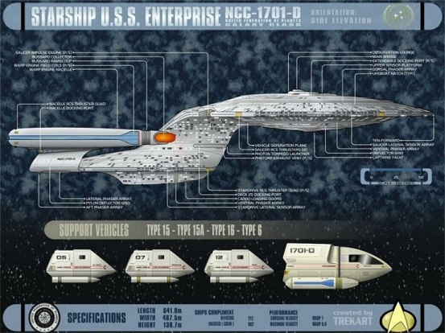
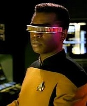
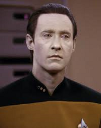
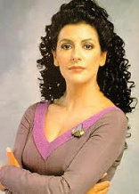
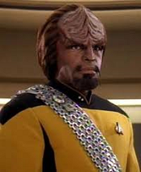
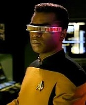
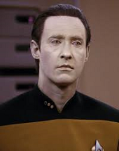
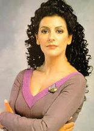
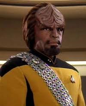

The Uss Enterprise 1701-D

Specification and background
- Class: Galaxy
- Category: Explorer
- SpaceFrame: Hybrid-sided; separable and reconnect-able saucer.
- Warp Power Plant: One 1500+ cochrane matter/antimatter warp core
- two LF-41 nacelles
- Warp Capabilities: Standard Warp 9.6 with Warp 9.9 for emergencies
The USS Enterprise (NCC-1701-D) was the only Federation Galaxy-class explorer that was in service with Starfleet in the mid-24th century. This was the fifth Federation starship to bear the name Enterprise. During her career, the Enterprise served as the Federation flagship. She was home to over 1000 civilian and military individuals while on her continuing missions to explore the unknown universe. With her fearless crew at the controls it seemed as though nothing could stop her from completing the mission at hand. The Enterprise was destroyed during the Battle of Veridian III in 2371.
 






